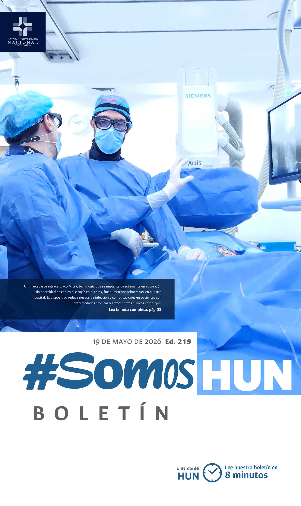
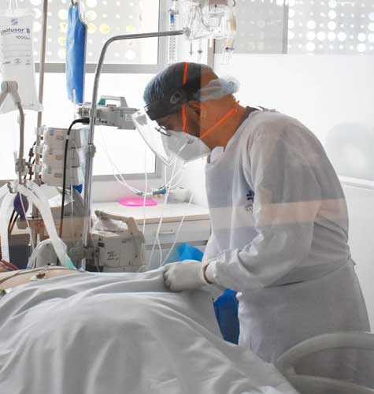
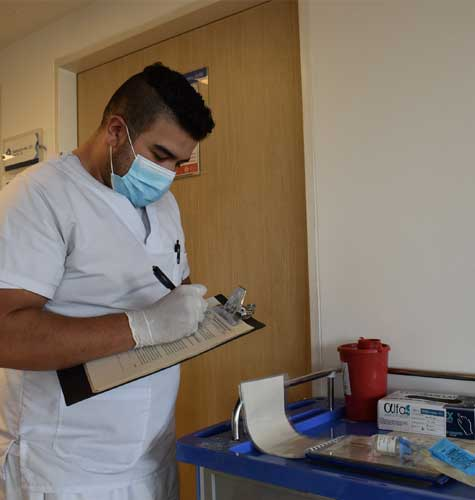
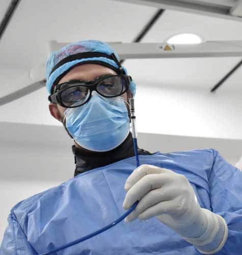

Ver todos los boletines
HUN presenta lo resultados de la IX Autoevaluación de Acreditación y la Primera para Joint Comission Avanza el camino hacia la excelencia en la calidad superior
El Hospital Universitario Nacional de Colombia presentó los resultados de la IX Autoevaluación de Estándares de Acreditación en Salud, un ejercicio institucional realizado entre febrero y marzo de 2026 que ratifica el compromiso del Hospital con el fortalecimiento de la calidad superior y la mejora continua en la atención a los pacientes.Leer más

Culminó la visita de galardón Seguro
La Asociación Colombiana de Hospitales y Clínicas culminó su visita de evaluación al Hospital Universitario Nacional de Colombia en el marco del Galardón Hospital Seguro, un proceso que permitió reconocer fortalezas institucionales en seguridad del paciente, infraestructura y cultura organizacional, así como identificar oportunidades de mejora orientadas a fortalecer la calidad y la excelencia en la atenciónLeer más

HUN implanta el primer marcapasos endovascular MICRA
El implante de un marcapasos sin cables directamente en el corazón del paciente marca un nuevo avance para el servicio de salud cardiovascular del Hospital Universitario Nacional de Colombia (HUN)Leer más